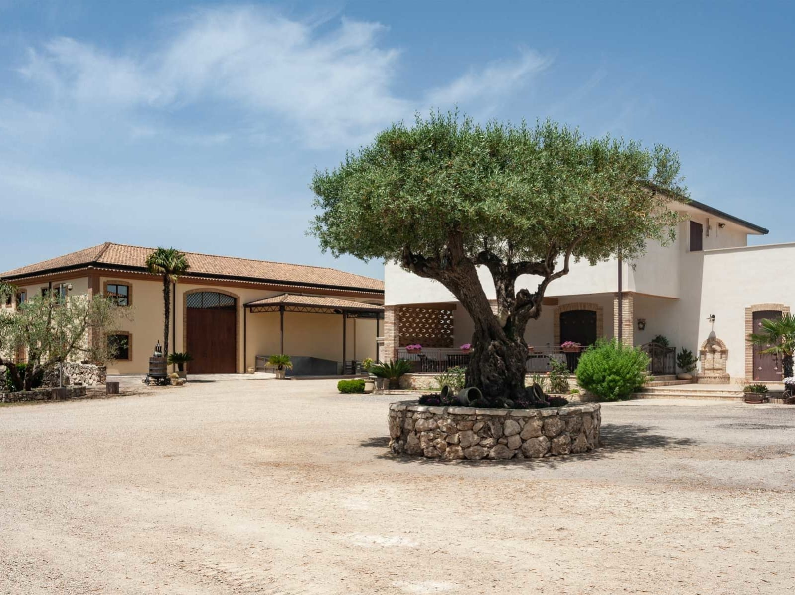
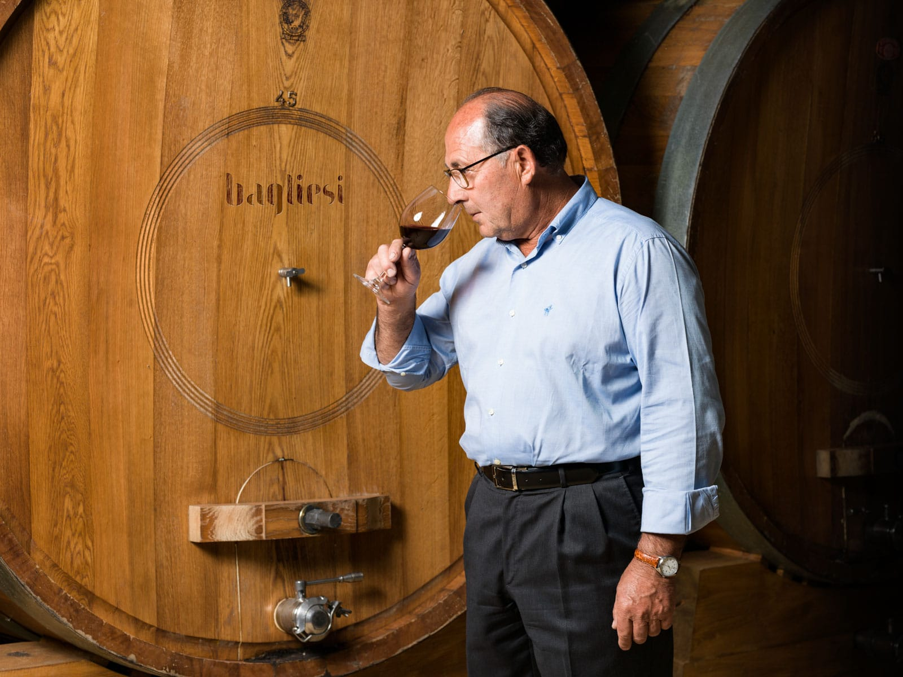
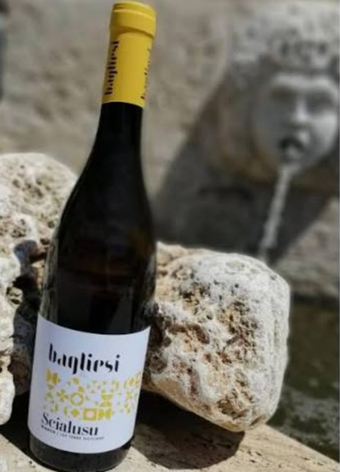

La Cantina Bagliesi è un'azienda agricola biologica con sede a Ravanusa, in provincia di Agrigento. Nata agli inizi degli anni Sessanta, rappresenta la naturale evoluzione di una tradizione familiare oggi alla terza generazione, sotto la guida di Vito Bagliesi.

Biologico per scelta
I 25 ettari di vigneti — 20 in contrada Cammuto a Naro e 5 in contrada Giangaragano a Ravanusa — sono condotti in agricoltura biologica certificata, con un approccio che unisce rispetto della terra e innovazione. Una filosofia che si ritrova, sincera, dentro al bicchiere.


I vitigni della Sicilia
In vigna convivono gli autoctoni — Nero d'Avola, Grillo e Catarratto — e gli internazionali come Syrah, Merlot e Cabernet Sauvignon. Ne nasce una gamma ampia: rossi come Nero Saraceno, Maior e Scialusu, bianchi freschi, il rosé Sciapó, il frizzante Sofì e lo spumante brut Perla.
A pochi minuti da casa
Ravanusa è a un soffio da Campobello di Licata: soggiornando a La Valle Incantata puoi raggiungere facilmente la cantina per una degustazione e scoprire un vino biologico che racconta, calice dopo calice, l'anima di questa terra.
Soggiorna nella terra del vino
La Valle Incantata è la base ideale per scoprire le cantine e i sapori dell'agrigentino: giardino privato, fino a 8 ospiti, nel cuore di Campobello di Licata.